7 Making inferences about an individual participant using hierarchical models
When we run an experiment, we usually have a good number (let’s call it \(N\)) of participants making good number (let’s call it \(T\)) of decisions. In this (very common) case, a hierarchical model may be a great way to organize our data. But before we go and estimate our model, it is important to have in mind the quantities that we want to estimate.30 To fix ideas, suppose that we have data that speak to participants’ risk preferences, and we estimate an expected utility model with the constant relative risk aversion (CRRA) utility function:
\[ u_i(x)=\frac{x^{1-s_i}}{1-s_i} \]
where \(s_i\) is participant \(i\)’s coefficient of relative risk aversion. Suppose further that we estimated \(s_i\) (and all other participants’ \(s\)s as well) using a hierarchical model with the following specification (here I am leaving out any probabilistic choice and likelihood specification so you can just focus on how \(s_i\) enters into the hierarchical structure):
\[ s_i \sim iid N(\mu,\sigma^2) \]
Here we can make (at least) two kinds of inferences from such a hierarchical model. Firstly, we can make inferences about the population parameters \(\mu\) and \(\sigma\). That is, our model assumes that \(s_i\) is drawn from this normal distribution, and we are interested in learning about it. For example, we might be interested in reporting the posterior distribution of \(\Phi(\mu/\sigma)\) (where \(\Phi(\cdot)\) is the standard normal cdf), which is the fraction of participants in the population who are risk averse. Here, the data-augmented \(s_i\)s are nuisance parameters: we have to estimate them to get at the thing we want to estimate, but they are not quantities that we are interested in. On the other hand, our inferential goal may be to know things about specific participants. That is, instead of being interested in the fraction of risk averse participants in the population, we are instead interested in whether participant \(i\) is risk averse. That is, we might want to report the posterior probability that \(s_i\) is positive. In this case \(s_i\) speaks directly to our research question, and in fact one could think of the population-level parameters \(\mu\) and \(\sigma\) as being the nuisance parameters. This chapter is about this second kind of inferential goal: we want to make statements about participants who actually participated in the experiment, and not the hypothetical ones that could have shown up from the subject pool, but didn’t.31
To the extent that a hierarchical model can leverage the remaining \(N-1\) participants’ data to form a realistic and (hopefully) more informative prior about participant \(i\) compared to just estimating a model with just participant \(i\)’s data, the hierarchical model is going to be a useful way for us to make statements about specific participants in our experiment. It is also a more principled way of forming priors over the participant-specific parameters, because the prior at this level of a hierarchical model is estimated.32
7.1 Example dataset and model
Harrison, Ross, and Swarthout (2026) investigate the relationship between gender and confidence in a variety of situations. For the purposes of this chapter, we will be interested in two tasks from this experiment. In one task, participants made thirty binary lottery choices. These decisions will be the data that inform us of our participants’ risk preferences. In another task, participants completed thirty-six Raven matrices. For the purposes of this chapter, we can think of each Raven task as an 8-part multiple choice question. However instead of just being asked to select the correct answer, participants in some treatments were incentivized to report their beliefs about which answers were correct. That is, they assigned 80 tokens among the eight possible answers, and were rewarded with an increasing function of the number of tokens assigned to the correct answer. The increasing function used is called the “quadratic scoring rule” (QSR). We will get into the weeds with the implications of risk preferences and the QSR soon enough, but at this point we should note that:
- We only have \(T=30\) binary decisions per participant to identify risk preferences, which is small enough that we should expect there to be a lot of posterior uncertainty in the estimates, and
- If a participant is not risk-neutral, then the QSR does not incentivize them to correctly report their beliefs.
The first observation will mean that for whatever prior we use, it will likely weight heavily in the posterior. Therefore we need a good way of justifying this prior. The second observation means that we cannot directly interpret a report of (say) 50% of the tokens placed on a Raven question’s answer to mean that the participant was 50% confident that the answer was correct. Fortunately, Harrison, Monroe, and Ulm (2026) provide us with a way of correcting for this, once we know a participant’s risk preferences.
For this exercise, we will assume that participants have rank-dependent utility preferences (Quiggin 1982). More on this later, but to begin with we need to ask ourselves:
7.1.1 What are we trying to estimate?
I decided to focus on two quantities to estimate. Specifically, for a given participant in the experiment:
- What is the risk premium associated with a lottery that puts equal probability on prizes \(\$5\), \(\$35\), and \(\$65\)?33 By looking at the risk premium, we can easily tell if the participant is risk averse or risk loving. This is particularly useful for the RDU model we use: since there are three parameters in it, it is difficult to just look at the parameters and tell whether or not a participant is risk averse.
- What are the corrected beliefs for the Raven task? That is, can we recover the participant’s true beliefs about the correct answers to the Raven questions?
While I could of course have done this for all participants in the experiment, I wanted to showcase the individual-ness of what you can do here. To this end, I chose to work on Participant 6134 because this participant made a lot of interesting belief reports in the Raven task35 and because their choices in the lottery task generated some reasonably typical estimates of risk preferences.
7.1.2 The RDU model
The RDU model is a generalization of expected utility theory where instead of probabilities entering into the utility function linearly, they enter non-linearly. We can write the rank-dependent utility of a lottery \(L\) as:
\[ U_i(L)=\sum_{k=1}^K\pi^L_{i,k}(p^L)u_i(x_k^L) \]
where \(x_k\) is the \(k\)th prize for lottery \(L\) with prizes ranked from smallest to largest, and \(p^L_k\) is the probability of winning prize \(k\). \(u_i(x)\) is the participant’s utility over certain amounts of money, which we shall assume takes the CRRA form:
\[ u_i(x)=\frac{x^{1-s_i}}{1-s_i} \]
and \(\pi^L_{i,k}\) is the decision weight associated with prize \(k\). We compute decision weights using a probability weighting function \(\omega_i(\cdot)\) applied to the lottery’s cumulative probabilities (this is why sorting the prizes from smallest to largest is important). If the cumulative probabilities for lottery \(L\) are \(c^L\), then the cumulative decision weights \(w\) are, using the Prelec (1998) specification:
\[ \begin{aligned} w_i^L =\omega_i(c^L)&= \exp(-\eta_i(-\log c^L)^{\psi_i}),\\ \text{and: } \pi^L_{i,k}&=w^L_{i,k}-w^L_{i,k-1} \end{aligned} \]
Where \(\eta_i>0\) and \(\psi_i>0\) are the parameters in the probability-weighting function. Here we need to note that we can’t evaluate \(\omega_i(0)\) becuase that would mean taking \(\log(0)\). But since we the limit of this as \(c\to0\) is zero, we can just replace these with zeros in the code.
7.1.3 Adding an error term
Here we will assume our usual logit choice rule with imprecision term \(\mu_i>0\),36 so that if a participant is evaluating lotteries \(L\)(eft) and \(R\)(ight), they choose lottery \(R\) with probability:
\[ \Lambda\left(\frac{U_i(R)-U_i(L)}{\mu_i(u_i(\overline x)-u_i(\underline x))}\right),\quad \Lambda(x)=(1+\exp(-x))^{-1} \]
Here the \(u_i(\overline x)-u_i(\underline x)\) bit in the denominator is the contextual utility normalization (Wilcox 2011), which scales utility differences to be between -1 and 1.
7.2 Using just Participant 61’s data
To begin with, we will just estimate the participant’s risk premium and beliefs using their own data only. I do this for a couple of reasons. First, it is always worth getting the participant-specific (or representative agent) model running before you jump into the hierarchical model. This is because most of the issues you will run into will likely be identified here.37 You then will have a much smaller program to debug while you work out what the problems are. Secondly, and this will become apparent as we do more hierarchical models, the steps of going from a participant-specific to a hierarchical model are mostly going to look the same irrespective of what your application is: get the new part working well before you add more complexity.
7.2.1 Estimating the model’s fundamental parameters
Before we go ahead and get a posterior simulation of the risk premium and estimated beliefs for this participant, we are going to need a posterior simulation of the model’s fundamental parameters. These are \(s_i\), \(\eta_i\), \(\psi_i\), and \(\mu_i\). In writing the Stan program for this, I decided to split it into three parts. The main part estimates the fundamental parameters, and the other two are functions and generated quantities blocks that do the risk premium and beliefs calculations. I did this becuase the functions block will look exactly the same in the hierarchical model. But for this section, we can ignore these extra blocks and just focus on the part of the Stan program that estimates these fundamental parameters:
#include include_functions.stan
data {
// LOTTERY CHOICE DATA -------------------------------------------------------
int N, nprizes; // number of observations, number of prizes
// prize and probability matrix -- prizes are common to both lotteries
matrix[N,nprizes] prizes, probL, probR;
// 1 = chose Right lottery, 0 = chose Left lottery
array[N] int<lower=0, upper=1> choiceR;
// BELIEFS DATA --------------------------------------------------------------
int<lower=0> K; // number of bins to be reporting beliefs over
int<lower=0> tasks; // number of times beliefs are elicited
array[tasks] vector<lower=0, upper=1>[K] r; // reports for each task
real alpha, beta; // payoff parameters for quandratic scoring rule
}
transformed data {
matrix[N,nprizes] cpL, cpR, cpL0, cpR0;
for (ii in 1:N) {
cpL[ii, ] = cumulative_sum(probL[ii,]);
cpR[ii, ] = cumulative_sum(probR[ii,]);
}
for (ii in 1:N) {
for (pp in 1:nprizes) {
cpL0[ii,pp] = cpL[ii,pp] < 1.0e-6;
cpR0[ii,pp] = cpR[ii,pp] < 1.0e-6;
}
}
}
parameters {
/*
Here I am setting the parameters up to all have log-normal priors. This is
so I can compare them to the hierarchical model in the next part of this
chapter
*/
real<lower=0> s_transformed; // CRRA coefficient, transformed so I can assign a log-normal prior to it
real<lower=0> mu; // Fachner error term for logit choice
real<lower=0> eta, psi; // Prelec probability weighting
}
transformed parameters {
real s = 1.0-s_transformed;
}
model {
/* prior - Here I am using deliberately diffuse priors, and I will
use this to make a point later
*/
s_transformed ~ lognormal(log(0.5),1);
mu ~ lognormal(log(0.2), 1);
eta ~ lognormal(0.0, 1);
psi ~ lognormal(0.0, 1);
// likelihood contribution ---------------------------------------------------
// utility of each prize
matrix[N, nprizes] U = pow(prizes, 1.0-s)/(1.0-s);
// cumulative decision weights
matrix[N, nprizes] wcpL = exp(-eta*pow(-log(cpL+0.01*cpL0),psi)).*(1.0-cpL0);
matrix[N, nprizes] wcpR = exp(-eta*pow(-log(cpR+0.01*cpR0),psi)).*(1.0-cpR0);
// de-cumulative decision weights
matrix[N, nprizes] wL = wcpL;
matrix[N, nprizes] wR = wcpR;
for (pp in 2:nprizes) {
wL[,pp] = wcpL[,pp]-wcpL[,pp-1];
wR[,pp] = wcpR[,pp]-wcpR[,pp-1];
}
// difference in utility between the left and right lotteries
vector[N] DU = ((wR-wL).*U)*rep_vector(1.0,nprizes);
// contextual utility normalization
vector[N] nu = U[, 3] - U[ ,1];
// likelihood
choiceR ~ bernoulli_logit(DU./nu/mu);
}
#include include_GQ_individual.stanAnd here is what we get:
Fit.individual<-summary("Code/HMU2026/subjectXXX_belief.Rds" |> readRDS())$summary |>
data.frame() |>
rownames_to_column(var="parameter")
Fit.individual[2:5,] |>
kbl(row.names=FALSE,digits = 3, caption = "Fundamental parameters for Participant 61 from individual-level estimation.") |>
kable_classic(full_width=FALSE) |>
add_header_above(c("","","","","percentiles"=5,"",""))|
percentiles
|
||||||||||
|---|---|---|---|---|---|---|---|---|---|---|
| parameter | mean | se_mean | sd | X2.5. | X25. | X50. | X75. | X97.5. | n_eff | Rhat |
| mu | 0.069 | 0.003 | 0.082 | 0.015 | 0.031 | 0.047 | 0.075 | 0.260 | 753.925 | 1.002 |
| eta | 0.952 | 0.013 | 0.352 | 0.392 | 0.784 | 0.920 | 1.063 | 1.651 | 772.349 | 1.001 |
| psi | 1.156 | 0.018 | 0.489 | 0.604 | 0.942 | 1.085 | 1.238 | 2.351 | 743.228 | 1.003 |
| s | 0.754 | 0.004 | 0.153 | 0.421 | 0.670 | 0.781 | 0.867 | 0.954 | 1470.004 | 1.003 |
So for what it’s worth we get a reasonably informative posterior using just the 30 decisions made by Paryticipant 61. To see this, note that the prior standard deviation for \(s\) was one, and now the posterior standard deviation is 0.153, so there has been quite a bit of updating. From this Table 7.1, we can be very certain that Participant 61’s utility over money is concave (because even at the 2.5th percentile \(s\) is positive). However what we can’t tell from this table is whether this participant is globally risk-averse, in that the combination of their parameters \(s\), \(\eta\) and \(\psi\) mean that their risk premium is negative.38 Neither do we have any idea about their beliefs in the Raven task. To see these, we need to transform the posterior distribution into the desired quantities.
7.2.2 Estimating the things we actually want to estimate
To some extent, up to this point we have done all of the hard work. We have a posterior simulation of the fundamental parameters. All we need to do is transform them into the quantities that we are actually interested in. These are the participant’s risk premium and beliefs.
7.2.2.2 Beliefs
Next, we can work out how to compute Participant 61’s beliefs. But first, why should our model make us skeptical of the reported beliefs from the experiment? To see this, we need to delve into the interaction between the quadratic scoring rule (QSR) used to incientivize beliefs, and the rank-dependent utility model used to model behavior. To begin with, let’s understand the incentives of the QSR. In each of the beliefs tasks that Participant 61 completed, they were asked to assign 80 tokens to the eight possible answers to the Raven question. Let \(r = \begin{pmatrix}r_1 & r_2&\ldots & r_8\end{pmatrix}\) be this allocation, measured as the fraction of tokens assigned to each answer. From now on, we will just assume that this is a continuous choice variable that could be any number in the 8-dimensional simplex.39 The participant is rewarded for allocating a large fraction of tokens to the correct answer as follows. Suppose answer \(k\) is the correct answer, then the participant is paid:
\[ \theta_k=\alpha+\beta\left[2r_k-\sum_{j=1}^8r^2_j\right] \]
To see what the QSR is attractive is that for a risk-neutral participant, suppose we have a simpler situation with just \(K=2\) possible answers, and that the participant belief that the first answer is correct is \(p_1\). Their expected value is therefore:
\[ \begin{aligned} EV(r;p)&=p_1\left(\alpha +\beta \left[2r_1-r_1^2-(1-r_1)^2\right]\right)+(1-p_1)\left(\alpha +\beta \left[2(1-r_1)-r_1^2-(1-r_1)^2\right]\right)\\ &=\alpha+\beta\left[2p_1r_1+2(1-p_1)(1-r_1)-r_1^2-(1-r_1)^2\right]\\ \text{FOC: }0&=\beta\left[2p_1-2(1-p_1)-2r_1+2(1-r_1)\right]\\ &=2\beta\left[2p_1-1-r_1+1-r_1\right]\\ r_1&=p_1 \end{aligned} \]
so the expected value-maximizing participant will truthfully report their belief. But what if they are not expected value-maximizing? The RDU Participant 61 certainly isn’t. I will save the calculations for RDU for now, but it is instructive to work through the 2-answer example with an expected utility model to see why \(r\) is not necessarily equal to \(p\). For a CRRA EUT participant, their expected utility from reporting \(r_1\) when their belief is \(p_1\) is:
\[ \begin{aligned} EU(r_1;p_1)&=p_1\frac{\theta_1(r_1)^{1-s}}{1-s}+(1-p_1)\frac{\theta_2(r_1)^{1-s}}{1-s}\\ \text{FOC: } 0&=p_1\theta_1^{-s}\frac{\partial \theta_1}{\partial r_1}+(1-p_1)\theta_2^{-s}\frac{\partial \theta_2}{\partial r_1} \end{aligned} \]
Now, what we really want to do is solve for \(p_1\), becuase \(r_1\) is our datum. So:
\[ \begin{aligned} p_1&=\frac{\theta_2^{-s}\frac{\partial \theta_2}{\partial r_1}}{\theta_2^{-s}\frac{\partial \theta_2}{\partial r_1}-\theta_1^{-s}\frac{\partial \theta_1}{\partial r_1}} \end{aligned} \]
which is not necessarily equal to \(r_1\). In particular, we will see the following relationship between beliefs and reports:
alpha<-1->beta
d<-expand.grid(
r1 = seq(0.001, 0.999, by = 0.001),
s = c(-0.4,0, 0.4, 0.8)
) |>
mutate(
theta1 = alpha+beta*(2*r1-r1^2-(1-r1)^2),
theta2 = alpha+beta*(2*(1-r1)-r1^2-(1-r1)^2),
dtheta1dr1 = beta*(2-2*r1+2*(1-r1)),
dtheta2dr1 = beta*(-2-2*r1+2*(1-r1)),
p1 = theta2^(-s)*dtheta2dr1/(theta2^(-s)*dtheta2dr1-theta1^(-s)*dtheta1dr1),
s = paste("s =",s)
)
(
ggplot(d, aes(x=p1, y=r1, color=s))
+geom_line(linewidth=1)
+theme_bw()
+ylab("report")
+xlab("belief")
+scale_color_discrete(name="")
)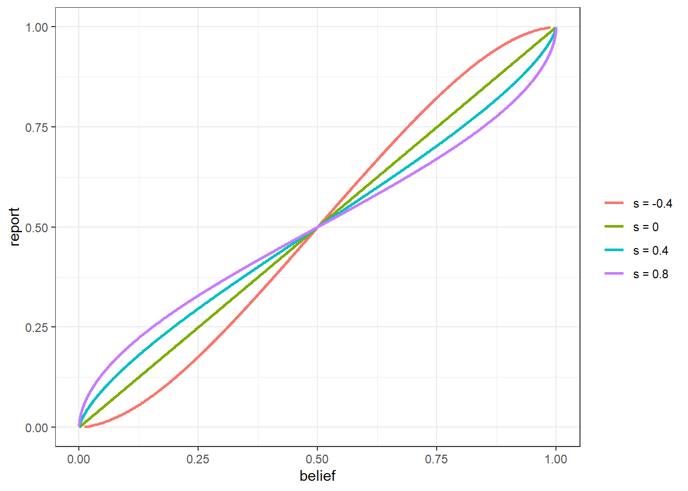
Figure 7.1: Relationship between beliefs and reports for a CRRA EUT participant.
So risk-averse (\(s>0\)) participants will shade their reports toward 50%.
From here, we still have a few more things to do before getting a useful expression for an RDU participant’s beliefs in the eight-option Raven task. These are:
- Modify our expression for recovered beliefs to accommodate the eight options in the Raven task, compared to two in the above example,
- Modify our expression for recovered beliefs to allow for RDU, rather than EUT, preferences, and
- Dealing with some computational persnickety-ness associated with RDU
Fortunately for us, all three are explicitly described in Harrison, Monroe, and Ulm (2026). For (1) and (2), Harrison, Monroe, and Ulm (2026) state that the recovered decision weights (these are the \(\pi\)s is the model outlined above), can be computed (with a few caveats, which we will get to), as follows, see their Footnote 13:
\[ \pi_{i,k}=\frac{r_k\theta_k^{-s_i}}{\sum_jr_j\theta_j^{-s_i}} \]
That is, decision weights are a weighted sum of reports, where the weights are proportional to the marginal utilities \(u'(\theta)=\theta^{-s_i}\). That’s great, but we still have several hurdles to overcome. First, the \(\pi_{i,k}\)s are de-cumulative decision weights, so we need to translate these into beliefs through the probability weighting function, which works on cumulative probabilities. Second, since RDU is a rank-dependent model, the rank of the \(r_k\)s matters: all of this needs to happen with the \(r_k\)s sorted from smallest to largest, and then we need to un-sort them at the end. Third, if a participant reports two values \(r_k=r_j\), then the payoff in these cases are the same. We need to bin these reports while working out beliefs, then distribute beliefs evenly across the possible answers they correspond to. Finally, if a participant reports \(r_k=0\) for an answer (this happens quite often), then we need to replace a NaN with a zero that comes out of the Prelec probability weighting function when it is evaluated at zero. Below, I sketch the steps needed to recover beliefs given the participant’s parameters \(s_i\), \(\eta_i\), and \(\psi_i\), and their reports \(r\).
- Let \(r^u\) be the unique values of \(r\), sorted from smallest to largest, \(n^u\) be the number of unique values in \(r\), and \(M\) be a \(n^u\times 8\) matrix such that \(M_{j,k}\) is equal to the inverse of the number of elements of \(r_k\) that are equal to \(r_j^u\).
- Compute the de-cumulative decision weights associated with \(r^u\), that is: \[ \pi_k=\frac{r^u_k{\theta_k^u}^{-s_i}}{\sum_{j=1}^{n^u}r^u_j{\theta_j^u}^{-s_i}},\quad k\in1, 2, n^u \]
- Calculate the cumulative decision weights associated with \(\pi\): \[ w_k=\sum_{j=1}^k\pi_j,\quad k\in1, 2, n^u \]
- Convert these into cumulative beliefs by applying the inverse Prelec probability-weighting function, making sure to replace \(p_1^c=0\) if \(w_1=0\): \[ p^c_k=\exp\left(-\left(-\frac{\log w_k}{\eta_i}\right)^{\frac{1}{\psi_i}}\right),\quad k\in1, 2, n^u \]
- De-cumulate the beliefs, remembering that these are beliefs assigned to each unique value of \(r\), not the full report itself: \[ \begin{aligned} p^u_k&=\begin{cases} p^c_k-p^c_{k-1}&\text{if }k\geq 2\\ p^c_1&\text{if } k=1 \end{cases} \end{aligned} \]
- Sort the beliefs vector back into the right order, and assign the correct weighting to the reports that have the same value: \[ p=M^\top p^c \]
7.2.3 Implementation in Stan
So up to this point we have written at Stan program to estimate the fundamental parameters. Now we have to code up the functions and generated quantities blocks to compute the risk premium and recovered beliefs. Here is the functions block I added:
// include_functions.stan
functions{
vector beliefs(data vector r, data int K, real s, real eta, real psi,
data real alpha, data real beta
) {
vector[K] p;
if (max(r)==1) { // if reports are degenerate, then just return reports
p = r;
} else {
// generate some indices that sort reports
array[K] int II_sort_r = sort_indices_asc(r);
vector[K] sort_r = r[II_sort_r];
// find out how many unique reports there are
int nunique = 1;
for (kk in 2:K) {
nunique += sort_r[kk] != sort_r[kk-1] ? 1 : 0;
}
// get a vector of unique reports
vector[nunique] unique_r;
int counter = 1;
for (kk in 1:K) {
if (kk==1) {
unique_r[1] = sort_r[1];
counter+=1;
} else {
if (sort_r[kk]!=sort_r[kk-1]) {
unique_r[counter] = sort_r[kk];
counter+=1;
}
}
}
/* create the mapping between unique reports and actual reports
This is matrix M
*/
matrix[nunique,K] mapping;
for (nn in 1:nunique) {
for (kk in 1:K) {
mapping[nn,kk] = unique_r[nn]==r[kk] ? 1.0 : 0.0;
}
}
mapping = mapping ./ rep_matrix(mapping*rep_vector(1.0,K),K);
// compute theta and its derivatives
vector[nunique] theta = alpha+beta*(2*unique_r-sum(pow(r,2)));
vector[nunique] dudtheta = pow(theta,-s);
// compute the decumulative decision weights
vector[nunique] w_decumulative = unique_r.*dudtheta/sum(unique_r.*dudtheta);
// cumulative decision weights
vector[nunique] w_cumulative = cumulative_sum(w_decumulative);
// invert the Prelec PWF
vector[nunique] p_cumulative = exp(-pow(-log(w_cumulative)/eta, 1.0/psi));
// deal with the problem at zero and one
p_cumulative[1] = w_cumulative[1]==0 ? 0.0 : p_cumulative[1];
p_cumulative[nunique] =1.0;
// de-cumulate p
vector[nunique] p_decumulative = p_cumulative;
for (nn in 2:nunique) {
p_decumulative[nn] = p_cumulative[nn]-p_cumulative[nn-1];
}
// assign beliefs according the the mapping matrix (M)
p = mapping'*p_decumulative;
}
return p;
}
real risk_premium(real s, real eta, real psi) {
// define the reference lottery
vector[3] x = [5, 35, 65]';
vector[3] p = rep_vector(1.0/3.0,3);
// cumulative probabilities
vector[3] cp = cumulative_sum(p);
// cumulative decision weights
vector[3] wcp = exp(-eta*pow(-log(cp),psi));
// de-cumulative decision weights
vector[3] wp = wcp;
for (pp in 2:3) {
wp[pp] = wcp[pp]-wcp[pp-1];
}
// rank-dependent utility of the reference lottery
real RDU = sum(wp.*(pow(x, 1.0-s)/(1.0-s)));
// certinaty equivalent of the reference lottery
real CE = pow((1.0-s)*RDU, 1.0/(1.0-s));
// return the risk premium
return (x'*p-CE);
}
}And here is the generated quantities block I added:
// include_GQ_individual.stan
generated quantities {
// beliefs
array[tasks] vector[K] p;
for (tt in 1:tasks) {
// apply the beliefs function
p[tt] = beliefs(r[tt], K, s, eta, psi,
alpha, beta
);
}
// apply the risk premium function
real riskPremium = risk_premium(s, eta, psi);
}Now, we can take a look at the quantities we are actually interested in! Here is the posterior distribution of the risk premium. Recall that a negative risk premium means that Participant 61 is risk-averse:
RP.individual<-data.frame(RP=extract("Code/HMU2026/subjectXXX_belief.Rds" |>
readRDS())$riskPremium)
postprob.RiskAverse<-mean(RP.individual$RP<0)
(
ggplot(RP.individual, aes(x=RP))
+geom_density(linewidth=1)
+theme_bw()
+xlab("Risk premium ($)")
+labs(title = paste("Posterior probability risk averse =",postprob.RiskAverse |> round(3)))
)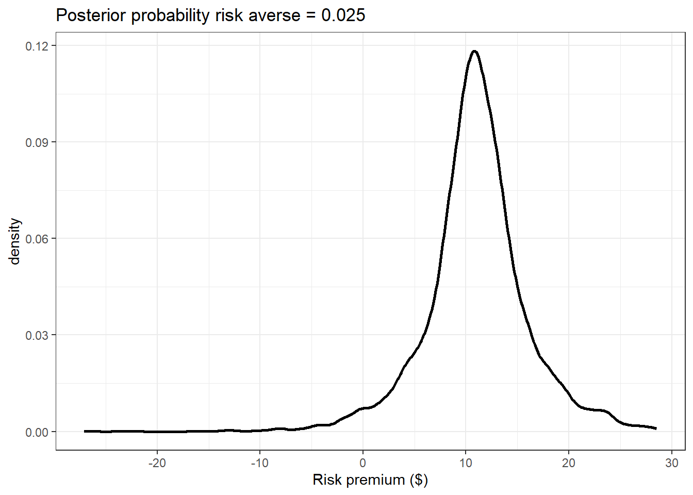
Figure 7.2: Posterior distribution of Participant 61’s risk premium from the individual-specific model
We can also look at how Participant 61’s reports mapped into their estimated beliefs, as shown in Figure 7.3:
d.belief<-"Code/HMU2026/subjectXXX_belief.csv" |>
read.csv() |>
mutate(
task = period-35
) |>
dplyr::select(task,stimulus_id,r1:r8) |>
pivot_longer(
cols = r1:r8,
values_to = "report"
) |>
mutate(
raven.option = name |> parse_number(),
raven.number = stimulus_id |> str_replace("raven_set2_q","") |> parse_number()
)
beliefs.individual<-Fit.individual |>
filter(grepl("p",parameter),!parameter=="psi",!parameter=="riskPremium",!parameter=="lp__") |>
mutate(
task = parameter |> str_split_i(",",1) |> parse_number(),
raven.option = parameter |> str_split_i(",",2) |> parse_number()
) |>
full_join(
d.belief,
by = c("task","raven.option")
) |>
group_by(raven.number) |>
mutate(
max.report = report==max(report),
interesting = sd(report)>0 & max(report)!=1
)
(
ggplot(beliefs.individual, aes(x=raven.option))
+geom_point(aes(y=report))
+geom_errorbar(aes(ymin = X2.5., ymax = X97.5.), color = "red")
+facet_wrap(~raven.number)
+theme_bw()
+xlab("Answer to question")+ylab("report (black dots) or belief (red error bars)")
)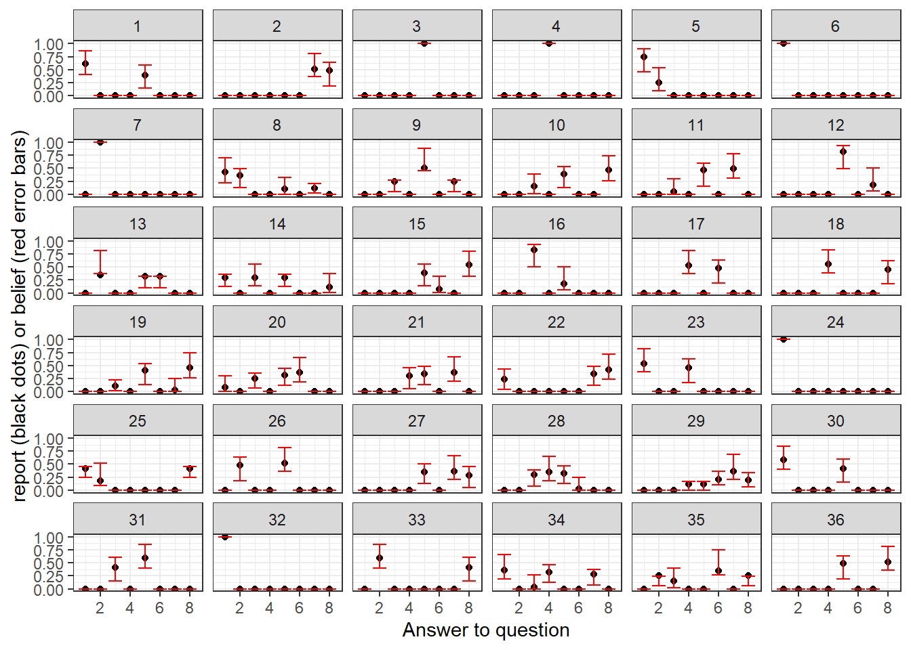
Figure 7.3: Reports (black dots) and beliefs (red error bars) for Participant 61 for their 36 Raven tasks Error bars show 95% Bayesian credible regions, 2.5th-97.5th percentiles.
Finally (for this part at least), we can see how much these reports are distrortions of beliefs in Figure 7.4. If beliefs and reports were the same, they would all lie on the \(45^\circ\) line (dashed line).
(
ggplot(beliefs.individual |> filter(interesting & report>0 ),aes(x=report))
+geom_point(aes(y=mean))
+geom_errorbar(aes(ymin = X25., ymax = X75.))
+geom_abline(slope=1, intercept=0, linetype="dashed")
+theme_bw()
+xlab("report")
+ylab("belief")
)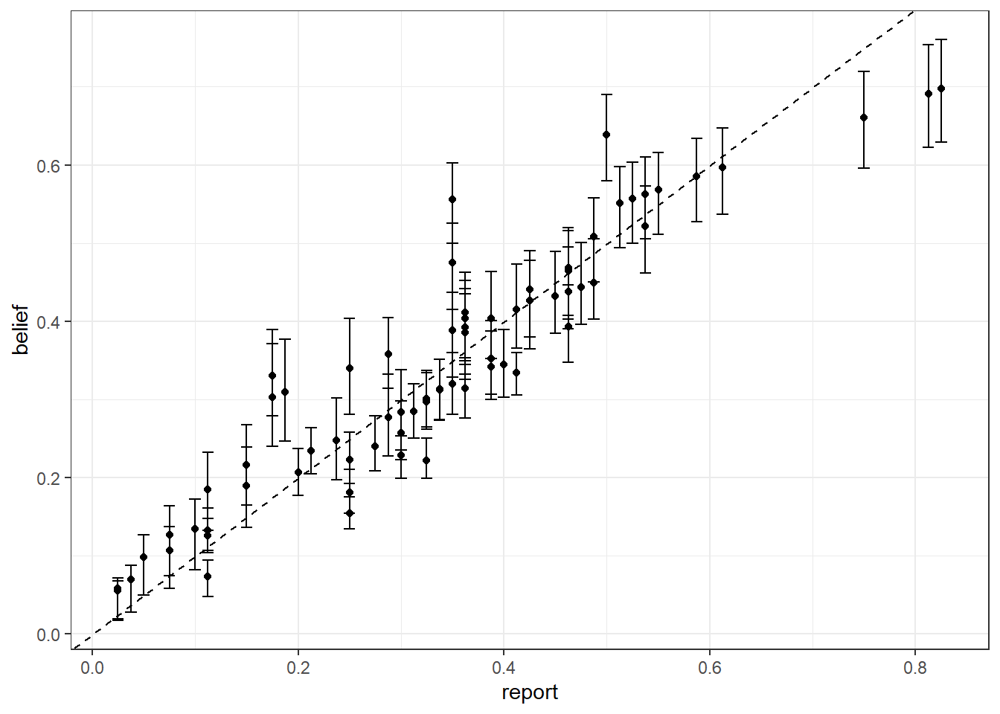
Figure 7.4: Relationship between reports and estimated beliefs for Participant 61. Error bars show 50% Bayesian credible regions, 25th-75th percentiles. Dashed line is a \(45^\circ\) line.
7.3 OK, but we have a better tool for this
While there is nothing wrong with what we did with Participant 61’s data so far,40 we are throwing away a lot of information when we do it. Specifically, we are throwing out all the information that the 183 other participants could have told us about Participant 61’s risk premium and beliefs, and in the previous chapter we have just learned how to do this! We have a whole lot of plausibly exchangeable participants, whose data can help us form better priors to use for Participant 61’s estimation. Note in the Stan program in the previous section that I set the prior standard deviations, somewhat arbitrarily, to one. A hierarchical model to some extent lets us wash our hands of this arbitrary-ness at the participant level, because the prior for participant-level parameters are estimated as part of the model.41 As such, we should feel much better with using a more informative prior at the participant level that comes from a hierarchical model than one that we came up with using a back-of-the envelope calculation and gut instinct.42 In practice, because we will probably be overly conservative with a back-of-the envelope prior calibration for an individual, the prior estimated in a hierarchical model will likely be more informative, and rightfully so!.
All we need to do now is:
- Write down the hierarchical model version of the individual-level model I described above, then
- Apply the same transforms to the individual-level posterior simulation associated with Participant 61.
As you will hopefully learn very quickly, making a hierarchical model once you have the participant-specific model looks almost the same every time you do it. We need to make every individual-level parameter a vector of parameters, one element for each participant, and then link them up with the (new) population-level parameters. Here is the hierarchical model I wrote in Stan to do this:
#include include_functions.stan
data {
// LOTTERY CHOICE DATA -------------------------------------------------------
int N, nprizes; // number of observations, number of prizes
array[N] int id_lottery; // Participant id for lottery task
// prize and probability matrix -- prizes are common to both lotteries
matrix[N,nprizes] prizes, probL, probR;
// 1 = chose Right lottery, 0 = chose Left lottery
array[N] int<lower=0, upper=1> choiceR;
// BELIEFS DATA --------------------------------------------------------------
int<lower=0> K; // number of bins to be reporting beliefs over
int<lower=0> tasks; // number of times beliefs are elicited
array[tasks] int id_belief; // Participant id for beliefs task
array[tasks] vector<lower=0, upper=1>[K] r; // reports for each task
vector[tasks] alpha, beta; // payoff parameters for quandratic scoring rule
}
transformed data {
// number of participants should be the maximum id
int nParticipants = max(id_lottery);
/* we need cumulative probabilities for lotteries and indicators for these cumulative
probabilities being zero, to be able to evaluate the RDU model.
*/
matrix[N,nprizes] cpL, cpR, cpL0, cpR0;
for (ii in 1:N) {
cpL[ii, ] = cumulative_sum(probL[ii,]);
cpR[ii, ] = cumulative_sum(probR[ii,]);
}
for (ii in 1:N) {
for (pp in 1:nprizes) {
cpL0[ii,pp] = cpL[ii,pp] < 1.0e-6;
cpR0[ii,pp] = cpR[ii,pp] < 1.0e-6;
}
}
}
parameters {
vector[4] MU; // mean vector of population-level parameters
vector<lower=0>[4] TAU; // sd vector of population-level parameters
cholesky_factor_corr[4] L_Omega; // Cholesky factor of the correlation matrix
/* Normalized individual-level parameters
This is the non-centered parameterization
*/
matrix[4, nParticipants] z;
}
transformed parameters {
// transform non-centered parameters into the ones we can actually interpret
vector[nParticipants] s, eta, psi, mu;
{
matrix[4, nParticipants] theta =
rep_matrix(MU, nParticipants)
+diag_pre_multiply(TAU, L_Omega)*z;
s = 1.0-exp(theta[1,]'); // this ensures s<1, which we need becuase sometimes there are zero prizes
eta = exp(theta[2,]'); // this ensures eta>0
psi = exp(theta[3,]'); // this ensures psi>0
mu = exp(theta[4,]'); // this ensures mu>0
}
}
model {
// hierarchical structure, non-centered parameterization
to_vector(z) ~ std_normal();
/* hyper-prior
Again, I'm using deliberately diffuse-ish priors, but here they enter as
priors for the hyper-parameters. The hope is that the data from all of the
other participants means we learn a lot about these hyper-parameters, and they
in turn get us much more realistic priors for the individual we are concerned about
*/
MU[1] ~ normal(log(0.5), 1);
MU[2] ~ normal(0.0, 1);
MU[3] ~ normal(0.0, 1);
MU[4] ~ normal(log(0.2), 1);
TAU ~ normal(0.0, 5);
L_Omega ~ lkj_corr_cholesky(1);
/* Some broadcast matrices of the individual-level parameters
These make the element-wise operations below easier
*/
matrix[N,nprizes] S = rep_matrix(s[id_lottery], nprizes);
matrix[N,nprizes] ETA = rep_matrix(eta[id_lottery], nprizes);
matrix[N,nprizes] PSI = rep_matrix(psi[id_lottery], nprizes);
// likelihood contribution
matrix[N, nprizes] U = pow(prizes, 1.0-S)./(1.0-S);
matrix[N, nprizes] wcpL = exp(-ETA.*pow(-log(cpL+0.01*cpL0),PSI)).*(1.0-cpL0);
matrix[N, nprizes] wcpR = exp(-ETA.*pow(-log(cpR+0.01*cpR0),PSI)).*(1.0-cpR0);
matrix[N, nprizes] wL = wcpL;
matrix[N, nprizes] wR = wcpR;
for (pp in 2:nprizes) {
wL[,pp] = wcpL[,pp]-wcpL[,pp-1];
wR[,pp] = wcpR[,pp]-wcpR[,pp-1];
}
vector[N] DU = ((wR-wL).*U)*rep_vector(1.0,nprizes);
vector[N] nu = U[, 3] - U[ ,1];
choiceR ~ bernoulli_logit(DU./nu./mu[id_lottery]);
}
#include include_GQ_hierarchical.stan7.3.1 What is the hierarchical model doing for our prior?
While we don’t directly care about the population-level parameters for what we want to estimate, it is instructive to compare them to the prior used in the individual-level model. This is shown in Figure 7.5. For simplicity, I am just using the posterior means of the population-level parameters to draw from the hierarchical prior. Here we can see that for all parameters the hierarchical prior is more informative, in that it is less spread out.
Fit.sum <- "02_Raven_hierarchical_summary.csv" |>
read.csv()
set.seed(42)
marginals<-Fit.sum |>
filter(grepl("MU",par) | grepl("TAU",par)) |>
mutate(
parameter = c("s","eta","psi","mu")[ par |> parse_number()],
quantity = ifelse(grepl("MU",par),"mean","sd")
) |>
pivot_wider(id_cols = parameter,
names_from = quantity,
values_from = mean
) |>
mutate(
model = "hierarchical"
) |>
rbind(
data.frame(
parameter = c("s","eta","psi","mu"),
mean = c(log(0.5), 0,0,log(0.2)),
sd = rep(1,4),
model = "individual"
)
) |>
expand_grid(
simstep = 1:10000
) |>
mutate(
x = exp(mean+sd*rnorm(n())),
x = ifelse(parameter=="s",1-x,x),
parameter = parameter |> factor(levels = c("s","eta","psi","mu"))
)
(
ggplot(marginals,aes(x=x, color = model))
+geom_density()
+facet_wrap(~parameter,scales="free")
+theme_bw()
+scale_color_manual(values = c("red","blue"))
)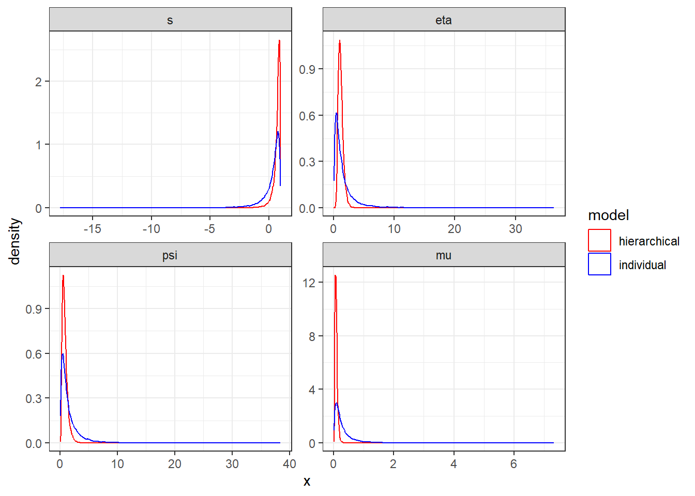
Figure 7.5: Comparison between prior used in individual-level estimation (blue) to that estimated in the hierarchical model (red).
One thing I did (and I pretty much always do this) for the participant-specific model was assume no prior correlation between the parameters. The hierarchical model, on the other hand, allows for correlation between these parameters. So even if the marginal distribution of the prior used for Participant 61 was similar between the two models, it could be that the hierarchical model is leveraging some correlation between the parameters that the individual model is not. To see this, we can just look at the estimated correlation matrix in Table 7.2:
fmt<-"%.3f"
OMEGA<-Fit.sum |>
filter(grepl("OMEGA",par)) |>
mutate(
msd = paste0(sprintf(fmt,mean)," (",sprintf(fmt,sd),")"),
row = par |> str_split_i(",",1) |> parse_number(),
col = par |> str_split_i(",",2) |> parse_number(),
msd = ifelse(sd<=1e-6,"1",msd)
) |>
pivot_wider(
names_from = "col",
id_cols = "row",
values_from ="msd"
) |>
ungroup() |>
dplyr::select(-row) |>
as.matrix()
colnames(OMEGA)<-c("$s$","$\\eta$","$\\psi$","$\\mu$")->rownames(OMEGA)
OMEGA |>
kbl(caption = "Correlation matrix from hierarchical model") |>
kable_classic(full_width=FALSE)| \(s\) | \(\eta\) | \(\psi\) | \(\mu\) | |
|---|---|---|---|---|
| \(s\) | 1 | 0.238 (0.243) | -0.020 (0.160) | -0.022 (0.208) |
| \(\eta\) | 0.238 (0.243) | 1 | -0.142 (0.155) | -0.178 (0.231) |
| \(\psi\) | -0.020 (0.160) | -0.142 (0.155) | 1 | 0.149 (0.182) |
| \(\mu\) | -0.022 (0.208) | -0.178 (0.231) | 0.149 (0.182) | 1 |
Not much to see here, but we didn’t know that until we estimated the hierarchical model.
7.3.2 Participant 61’s fundamental parameters
Next, we can look at the hierarchical model’s fundamental parameters associated with Participant 61. In Figure 7.6 I have them alongside the estimated prior from the hierarchical model.
Fit<-"Code/HMU2026/02_Raven_hierarchical.Rds" |>
readRDS()
fundamentals <-data.frame(
s = extract(Fit)$s[,61],
eta = extract(Fit)$eta[,61],
psi = extract(Fit)$psi[,61],
mu = extract(Fit)$mu[,61]
) |>
pivot_longer(cols = s:mu,
names_to = "parameter",
values_to = "value"
) |>
mutate(
parameter = parameter |> factor(levels = c("s","eta","psi","mu"))
)
(
ggplot()
+geom_density(data=fundamentals, aes(x=value, linetype="posterior"))
+geom_density(data=marginals |> filter(model == "hierarchical"), aes(x=x, linetype = "prior"))
+facet_wrap(~parameter, scales="free")
+theme_bw()
+scale_linetype(name="")
)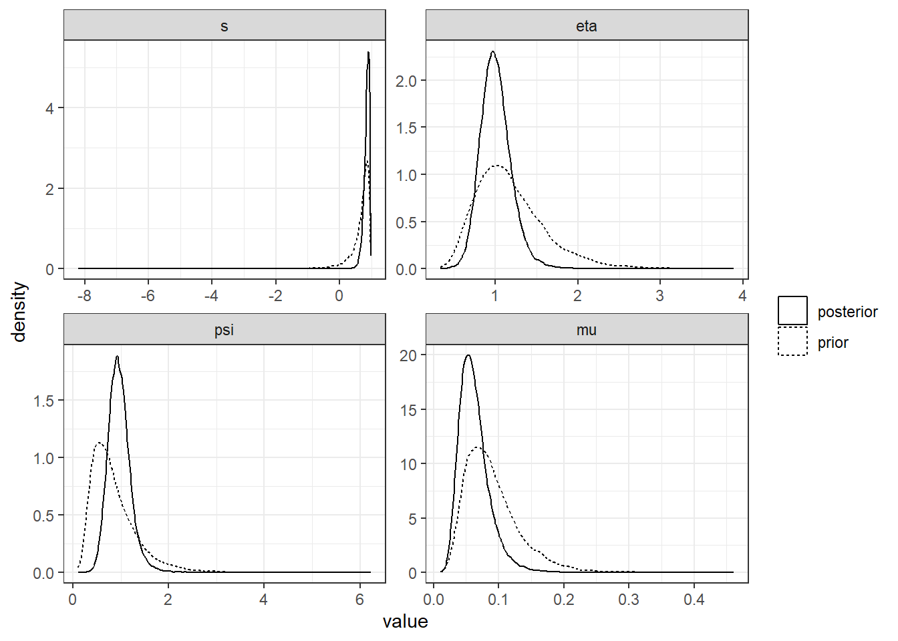
Figure 7.6: Poterior distribution (solid curves) of Participant 61’s fundamental parameters compared to the (estimated) prior (dotted curves).
But that’s not the end goal of this estimation. Again, we need to turn to:
7.3.3 The transforms that we care about
For this, we need to add the functions and generated quantities blocks to the Stan program. The functions block is exactly the same as for the individual-level estimation (which is why I wrote it that way). The generated quantities block is a little bit different, and here it is:
// include_GQ_hierarchical.stan
generated quantities {
// beliefs
array[tasks] vector[K] p;
for (tt in 1:tasks) {
p[tt] = beliefs(r[tt], K, s[id_belief[tt]], eta[id_belief[tt]], psi[id_belief[tt]],
alpha[tt], beta[tt]
);
}
vector[nParticipants] riskPremium;
for (ii in 1:nParticipants) {
riskPremium[ii] = risk_premium(s[ii], eta[ii], psi[ii]);
}
// correlation matrix
matrix[4,4] OMEGA = L_Omega*L_Omega';
}First, let’s look at the estimated risk premium. I have it in Figure 7.7 alongside the same estimate from the individual-level model. Here we can see that the models agree fairly well on this quantity. Perhaps the hierarchical model thinks Participant 61 is slightly less risk-averse by this measure than does the individual model.
RP.hierarchical<-data.frame(RP=extract(Fit)$riskPremium[,61])
(
ggplot()
+geom_density(data=RP.individual, aes(x=RP, color = "individual"), linewidth=1)
+geom_density(data=RP.hierarchical, aes(x=RP, color = "hierarchical"), linewidth=1)
+theme_bw()
+xlab("Risk premium ($)")
+labs(title = paste("Posterior probability risk averse =",(RP.hierarchical$RP<0) |>mean() |> round(3), "(hierarchical)"))
+scale_color_manual(values = c("red","blue"), name="model")
)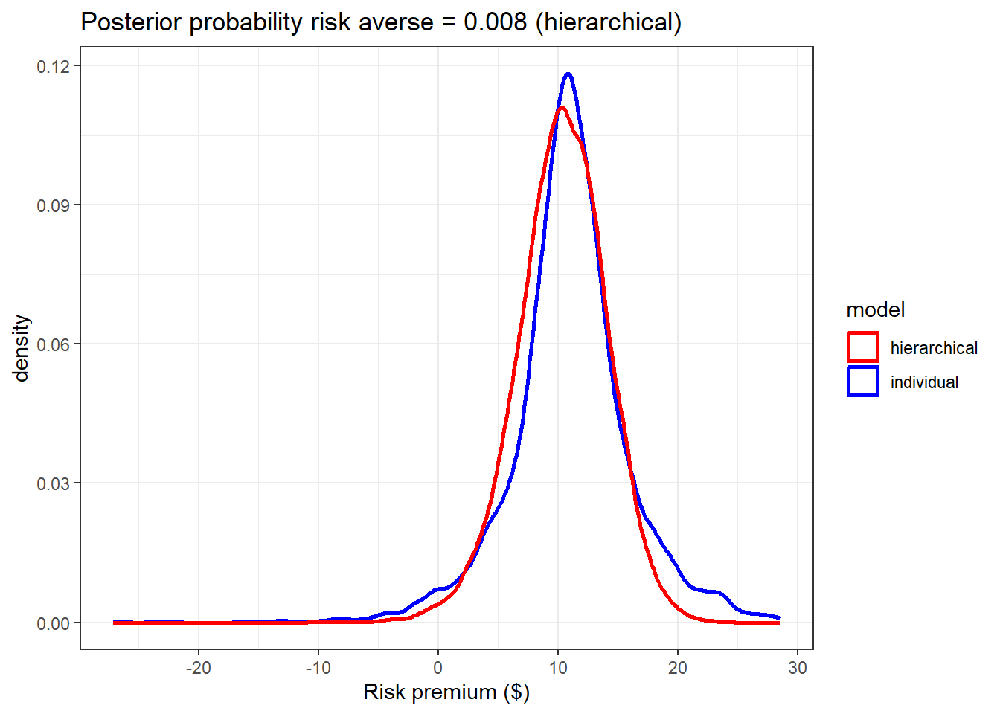
Figure 7.7: Comparison between the estimated risk premium from the individual (blue) and hierarchical (red) models.
Finally, we can get to our estimates of beliefs. Figure 7.8 is the hierarchical equivalent to Figure 7.1:
beliefs.hierarchical<-Fit.sum |>
filter(grepl("p",par),!grepl("psi",par),!grepl("riskPremium",par),!par=="lp__") |>
mutate(
task = par |> str_split_i(",",1) |> parse_number(),
raven.option = par |> str_split_i(",",2) |> parse_number()
) |>
full_join(
d.belief,
by = c("task","raven.option")
) |>
group_by(raven.number) |>
mutate(
max.report = report==max(report),
interesting = sd(report)>0 & max(report)!=1
)
(
ggplot(beliefs.hierarchical, aes(x=raven.option))
+geom_point(aes(y=report))
+geom_errorbar(aes(ymin = X2.5., ymax = X97.5.), color = "red")
+facet_wrap(~raven.number)
+theme_bw()
+xlab("Answer to question")+ylab("report (black dots) or belief (red error bars)")
)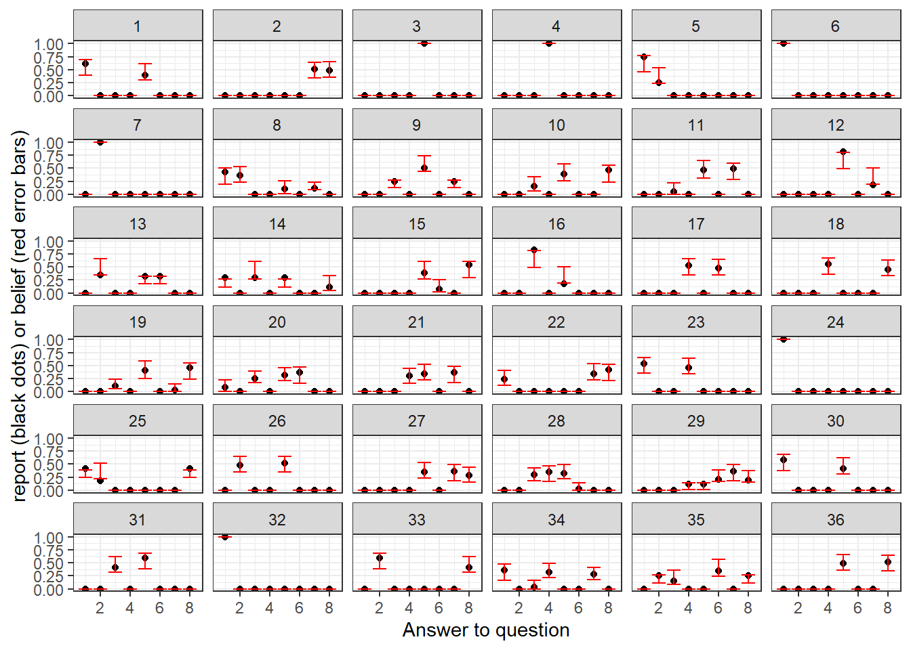
Figure 7.8: Reports (black dots) and beliefs (red error bars) for Participant 61 for their 36 Raven tasks Error bars show 95% Bayesian credible regions, 2.5th-97.5th percentiles. Estimates are from the hierarchical model.
And the equivalent plot of beliefs against reports is here in Figure 7.9:
(
ggplot(beliefs.hierarchical |> filter(interesting & report>0 ),aes(x=report))
+geom_point(aes(y=mean))
+geom_errorbar(aes(ymin = X25., ymax = X75.))
+geom_abline(slope=1, intercept=0, linetype="dashed")
+theme_bw()
+xlab("report")
+ylab("belief")
)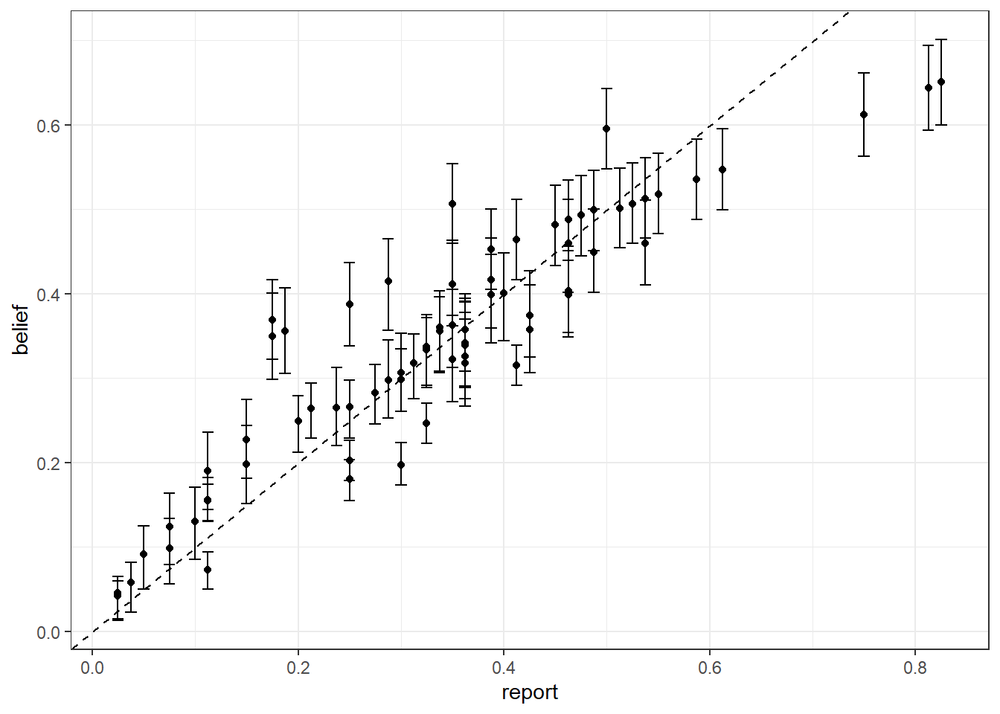
Figure 7.9: Relationship between reports and estimated beliefs for Participant 61 from the hierarchical model. Error bars show 50% Bayesian credible regions, 25th-75th percentiles. Dashed line is a \(45^\circ\) line.
How do these two estimates of beliefs compare? I found the best way to visualize this was to first look at the differences in posterior means, as in Figure 7.10:
BELIEFS<-rbind(
beliefs.individual |> mutate(model = "individual"),
beliefs.hierarchical |> mutate(model = "hierarchical")
) |>
filter(sd>0) |>
filter(mean!=0)
dplt<-BELIEFS |>
pivot_wider(
id_cols = c(task,raven.option),
names_from = model,
values_from = c(mean, sd)
)
(
ggplot(dplt)
+geom_point(aes(x=mean_individual, y=mean_hierarchical))
+theme_bw()
+geom_abline(slope=1, intercept=0, linetype="dashed")
+xlab("Posterior mean from individual-specific model")
+ylab("Posterior mean from hierarchical model")
)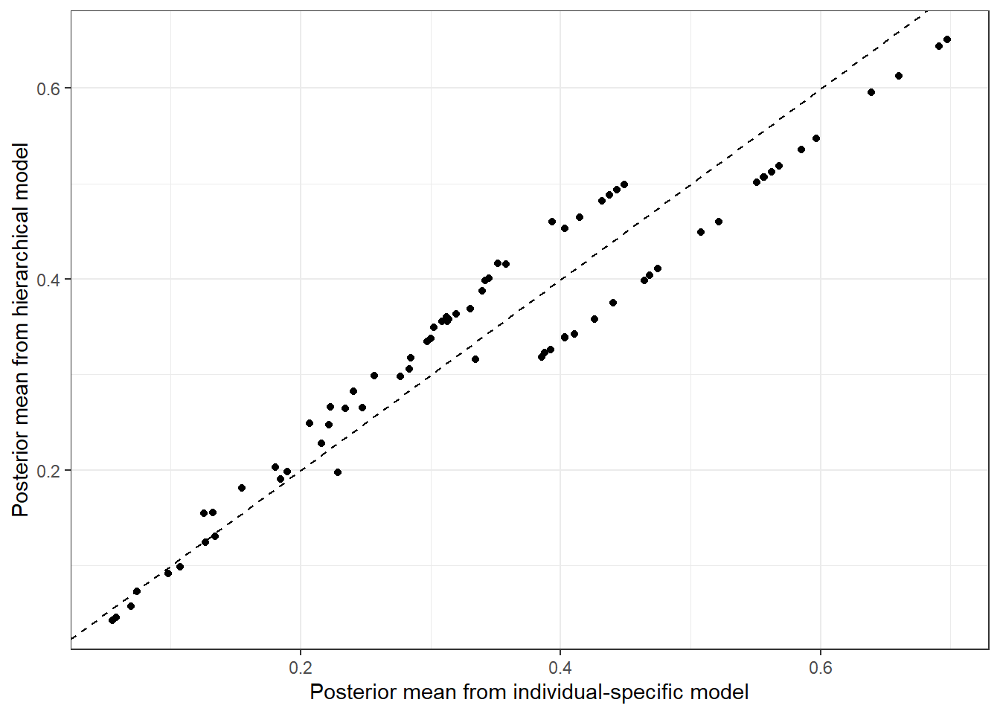
Figure 7.10: Comparsion of posterior means of beliefs from both models estimated.
This shows a substantial difference in the point estimates of beliefs. But a lot of what the hierarchical model buys us is better precision through more informative (or at least more disciplined) priors about individuals’ parameters, so let’s look at a plot that speaks to that in Figure 7.11:
(
ggplot(dplt,aes(x=sd_individual, y=sd_hierarchical))
+geom_point()
+theme_bw()
+geom_abline(slope=1, intercept=0, linetype="dashed")
+xlab("Posterior standard deviation from individual-specific model")
+ylab("Posterior standard deviation from hierarchical model")
)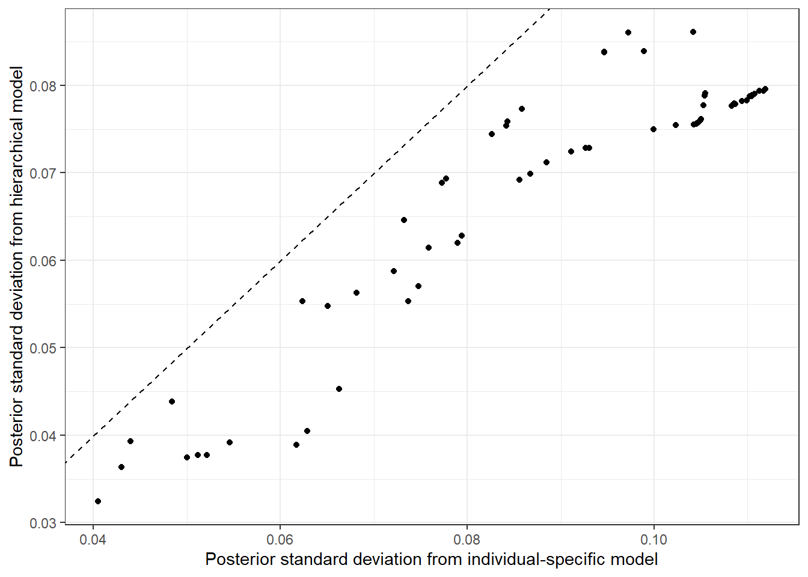
Figure 7.11: Comparsion of posterior standard deviations of beliefs from both models estimated.
Here we can se that for every corrected belief, the hierarchical model gets us a more precise posterior! Now, we have no guarantee of this. As a (somewhat silly) counterexample, suppose I assigned a prior standard deviation of zero to all parameters in the participant-specific model. This would just produce a degenerate posterior at the prior mean, and hence the standard deviation would be zero. But the hierarchical model allows us to use as much data as we can realistically throw at it to estimate a more reasonable prior for these parameters.
R code used for this chapter
library(tidyverse)
library(haven)
library(rstan)
options(mc.cores = parallel::detectCores())
rstan_options(auto_write = TRUE)
set.seed(42)
inv.logit<-function(x) 1/(1+exp(-x))
# THIS LOOKS LIKE THE RIGHT DATASET
D<-"Data/HMU2026/intelligence/raven_2022.DTA" |>
read_dta() |>
filter(!grepl("n100",stimulus_id)) |>
mutate(
uid = paste(session_timestamp,"-",computer,"-",subject_id)
) |>
group_by(uid) |>
mutate(
n.risk = sum(grepl("bb", stimulus_id)),
n.raven = sum(grepl("raven", stimulus_id))
) |>
ungroup()
D |>
group_by(uid) |>
summarize(
n.risk = sum(grepl("bb", stimulus_id)),
n.raven = sum(grepl("raven", stimulus_id))
) |>
ungroup()
D<-D |>
filter(
n.risk==30 & n.raven == 36
) |>
mutate(
id.num = uid |> as.factor() |> as.numeric(),
) |>
arrange(id.num, period)
RISK<-D |> filter(grepl("bb",stimulus_id))
BELIEF<- D |>
filter(grepl("raven",stimulus_id)) |>
mutate(
Raven.id = stimulus_id |> str_replace("raven_set2_q","") |> parse_number()
) |>
# My search to find a participant with interesting beliefs
rowwise() |>
mutate(
interesting.report = r1!=1 & r2!=1 & r3!=1 & r4!=1 & r5!=1 & r6!=1 & r7!=1 & r8!=1
& !(r1==0.125 & r2==0.125 & r3==0.125 & r4==0.125 & r5==0.125 & r6==0.125 & r7==0.125 & r8==0.125)
) |>
ungroup()
BELIEF |>
group_by(id.num) |>
summarize(
interesting.reports = sum(interesting.report)
) |>
arrange(
-interesting.reports
) |>
head()
# Just deal with one subject
# This is the 2nd-most "interesting" subject for computing beliefs given reports
# The *most* "interesting" made very noisy lottery decisions, so they are
# less interesting because of this
ss<-61
d.risk<-RISK |> filter(id.num==ss)
d.belief<-BELIEF |>
filter(id.num==ss) |>
filter(grepl("raven", stimulus_id))
probL<-d.risk |> select(Lp1:Lp3) |> as.matrix() |> apply(2,as.numeric)
probR<-d.risk |> select(Rp1:Rp3) |> as.matrix() |> apply(2,as.numeric)
prizes<-d.risk |> select(Ra1:Ra3) |> as.matrix() |> apply(2,as.numeric)
r<-d.belief |> select(r1:r8) |> as.matrix() |> apply(2,as.numeric)
dStan<-list(
N = dim(probL)[1],
nprizes = dim(prizes)[2],
probL = probL,
probR = probR,
prizes = prizes,
choiceR = 1*(d.risk$response_label=="Right"),
K = dim(r)[2],
tasks = dim(r)[1],
r = r,
alpha = 1,
beta = 1
)
d.belief |>
write.csv("Code/HMU2026/subjectXXX_belief.csv")
model.RDU<-"Code/HMU2026/RDU_individual.stan" |>
stan_model()
Fit.RDU <- model.RDU |>
sampling(data=dStan, seed=42,
#iter = 100, chains = 1, # debug settings
#iter = 5000, chains = 8,
control = list(adapt_delta = 0.99)
)
Fit.RDU |>
saveRDS("Code/HMU2026/subjectXXX_belief.Rds")
# Hierarchical estimation ------------------------------------------------------
file<-"Code/HMU2026/02_Raven_hierarchical.rds"
if (!file.exists(file) | TRUE) {
model.RDU.hierarchical <- "Code/HMU2026/RDU_hierarchical.stan" |>
stan_model()
probL<-RISK |> select(Lp1:Lp3) |> as.matrix() |> apply(2,as.numeric)
probR<-RISK |> select(Rp1:Rp3) |> as.matrix() |> apply(2,as.numeric)
prizes<-RISK |> select(Ra1:Ra3) |> as.matrix() |> apply(2,as.numeric)
dStan<-dStan<-list(
N = dim(probL)[1],
id_lottery = RISK$id.num,
nprizes = dim(prizes)[2],
probL = probL,
probR = probR,
prizes = prizes,
choiceR = 1*(RISK$response_label=="Right"),
K = dim(r)[2],
tasks = dim(r)[1],
r = r,
id_belief = d.belief$id.num,
alpha = d.belief$alpha,
beta = d.belief$beta
)
Fit.RDU.hierarchical<-model.RDU.hierarchical |>
sampling(data=dStan, seed=42,
# getting some ESS warnings
iter = 8000, chains = 8,
par = "z", include=FALSE
)
Fit.RDU.hierarchical |> saveRDS(file)
summary(Fit.RDU.hierarchical)$summary |>
data.frame() |>
rownames_to_column(var = "par") |>
write.csv("02_Raven_hierarchical_summary.csv")
}References
If we wanted to be more formal, these quantities are called the “estimands”.↩︎
You can think of this kind of inferential question as being something like “is Bob risk averse?” as opposed to asking “are people like Bob risk-averse?” The former is a question about Bob himself, the latter is a question about of the exchangeable population from which Bob was drawn. ↩︎
We still need to think carefully about the hyper-prior, the prior governing the population-level hyper-parameters.↩︎
This lottery was constructed so that the prizes covered a good range of the prizes in the lottery task.↩︎
This is Participant 61 based on the
id.numvariable that I generate in my code below.↩︎Here I defined “interesting” as neither degenerate nor uniform.↩︎
Here I’m mixing it up a bit and using the inverse of the precision term (which I usually denote \(\lambda\)) to stick with the notation of Harrison, Monroe, and Ulm (2026). ↩︎
The first time I tried to estimate an RDU model, I had trouble with the Prelec probability weighting function being evaluated at zero. Focusing on the participant-specific model allowed me to quickly idenitfy where the problem was in a relatively short Stan program, rather than having to wade through the weeds in the full hierarchical model. ↩︎
In reality we can eyeball this particular table and note that \(\eta_i\approx 1\) and \(\psi_i\approx 1\), so since \(s_i>0\) it is quite likely that they are risk-averse. But we can’t do this with every participant. ↩︎
This is of course ignoring the granularity of the 80- tokens, and any focal numbers that might be important to the participant (like 10% or \(\frac{1}{8}\)).↩︎
Strictly speaking, there is always something wrong with what we do in structural econometrics. All models are wrong, and so on. But here I really mean that we haven’t done anything blatantly stupid. ↩︎
We do have to think about the “hyper-priors”, which are the priors set on the population-level parameters.↩︎
This is not to say that you shouldn’t trust your gut instinct with priors when you’re an expert in the model. As I assume almost all of my readers are at least PhD students: yes you are experts!↩︎